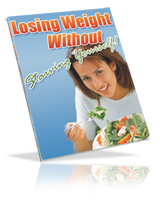
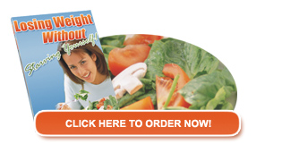

|
"Tired of
Trying To Loose Weight And It Never
Works or You Have To Starve Yourself Well
Here's
A Weight Loss Plan That takes Care of
Your
Weight Problem And You Can Still
Eat!"
In This
Book, You’ll Learn How
To Lose Weight And
Not Feel
Hungry! In An Easy Step-By-Step Process That
Enables You
To Feel Good About Loosing Weight
As Well
As Feeling Good
Because Your Stomach Is Still Full!
YOUR CITY YOUR STATE
4:12 pm, Monday Afternoon
Dear Friend,
According to recent surveys done, over 66 percent of Americans age 20 and over
are overweight by at least 20 pounds. Obesity is at an all time high as America
becomes the fattest nation on the
face of the earth! If you’re like me, you think that’s troubling!
Most of us could stand to lose a few pounds, or
at the very least start down the road to a healthier lifestyle. We have become a
nation dependent on fast food chains and quick-fix pre-packaged
foods in order to accommodate our busy lifestyles.
If you’ve found yourself with a couple of spare
tires around your mid-section, you probably know you should go on a diet. But
you dread doing that because you don’t want to have those hunger
pangs that you think inevitably come with diets and weight loss.
Change Your Thinking Today...
You don’t have to be hungry when you diet. In
fact, you might find yourself enjoying the kinds of foods you never thought you
could while on a weight loss program and never feel like you’re
starving yourself. How can you do that?
By Buying This
Book!
I’ve been given exclusive access to an amazing
new book that can unlock the mystery behind dieting, losing weight, and never
feeling hungry while you’re doing so! It’s titled, “Losing Weight
Without Starving Yourself” and I’m offering it to you right now!
I couldn’t believe it either. I’ve been through
the gamut of fad diets, those fat burning pills that promise to take off 20
pounds in just 3 days....you name it, I’ve done it when it comes to weight
loss. The problem was that nothing worked - none of it. And then I read this
book!
Inside these pages is a wealth of information
about losing weight and still feeling like you’re cheating on your diet. What
can you find?
-
Information about metabolism and why it
controls your weight loss
-
Putting yourself into the right mindset to
lose weight
-
What foods you can eat
-
What foods you
CAN’T eat
-
How to shop for the right foods
-
And
much, much more!
This book takes the advice of nutritionists, diet
experts, and even the Mayo Clinic to offer YOU the best advice around on how to
lose weight and not feel hungry in the process. After all, that’s
why most people hate the thought of dieting.
Some people think that eating salads every day is
the only way to lose weight. Well, it’s a good start, but, really, truly, how
long do you think it will take before you dread the mere sight of a lettuce
leaf?
The truth is that salads alone just can’t satisfy
the needs of the average person. It’ll work for a while, but you run the risk of
falling hopelessly off your diet – and quickly at that!
Believe it or not,
You Can Enjoy
Regular Food And Still Lose Weight!
It’s true! I didn’t think so either until I read
this book! The secret to losing weight without starving yourself is right here
inside these pages. Plus it gives you some excellent advice on
what foods you should eat, portion sizes, number of meals and exercise regimens.
In fact, you will read about
-
A great fat burning exercise workout
-
Toning exercises
-
Exercise to banish cellulite
-
Walking for weight loss
-
And other forms of exercise to help you
along!
When there are over fifty percent of our fellow
Americans who are out there struggling with their weight, there’s really no
reason NOT to
buy this book.
Weight loss remedies bombard us on a daily basis.
It’s difficult to open up a magazine or watch a television program without
seeing an advertisement or commercial for the next great thing in weight loss.
Do they work?
Read This Book
And Find Out!
Shedding those extra pounds is no easy task. It
takes determination, willpower, and a little work. How do you do that? By being
committed to your health and your weight loss goals.
But first,
you need the tools.
There are so many people out there who want to
give you weight loss advice. How many times have you heard these statements:
-
 Drink lots of water
-
Try the “Cabbage Soup” diet
-
I’m off carbs and it works great!
-
Only eat dinner and use those weight loss
shakes in between
Some of this advice is fine, but it’s the rest of
it you have to look out for! The truth is that you have to figure out what’s
right for you and what your body will respond to when it comes to your
weight loss goals. This book is an excellent way to start!
|
What I liked best about the information this book
gives you is the tools you are given to help you along the way. What kind of
tools are there?
-
A chart outlining the caloric content of
certain foods
-
How many calories you can burn during specific activities
-
Over 15 delicious
recipes for weight loss
You don’t have to spend hours counting calories
anymore. Just follow the advice in this book, and you will lose weight. But you
have to be serious about it!
I want you to know the secret to losing weight
too! That’s why I’m giving you this exclusive offer today! Order “Lose
Weight Without Starving Yourself” for just $xx.xx,
and begin the journey
towards a slimmer you in just minutes.
When you click the order button today, this
amazing book will be delivered to your e-mail box within minutes so you can
start tomorrow – even today!
You Owe It To
Yourself To Order This Book!
Maybe you’re a little leery about paying for
weight loss advice. I don’t blame you! The best part about this incredible offer
is that you have absolutely NO RISK when you order from me! Why? Because I
guarantee this book!
|
Check
Out Our Unheard of Famous Clear As
Black-And-White
100% Money Back Guarantee!
You’ll
Enjoy A 100 Percent 90-day
Money-Back Guarantee! That’s
right! We
said you get 100 percent of your money
back
if you don’t loose that unwanted weight that you have always wanted to. |
So don't starve yourself in pursuit of weight
loss. There's absolutely no need for it. Get used to the idea that losing weight
does not require being hungry. Losing weight in a healthy way does not
involve starving or deprivation. That's why it is permanent -- if you lose
weight in a healthy way, you're likely to keep it off for good.
That’s what you want, isn’t it?

ORDER NOW!
What are you waiting for? ORDER NOW AND LOSE
BIG! But only that excess weight!
Warmest Regards!
(your name)
P.S. Remember, you can order with confidence from
me! Take 90 days to read this book and put it’s valuable advice to work. If it’s
not what we say it is, you’ll get all of your money back – 100 percent! No Risk,
No Worries, Less Weight. Sounds perfect to me! How about you? Order today! |